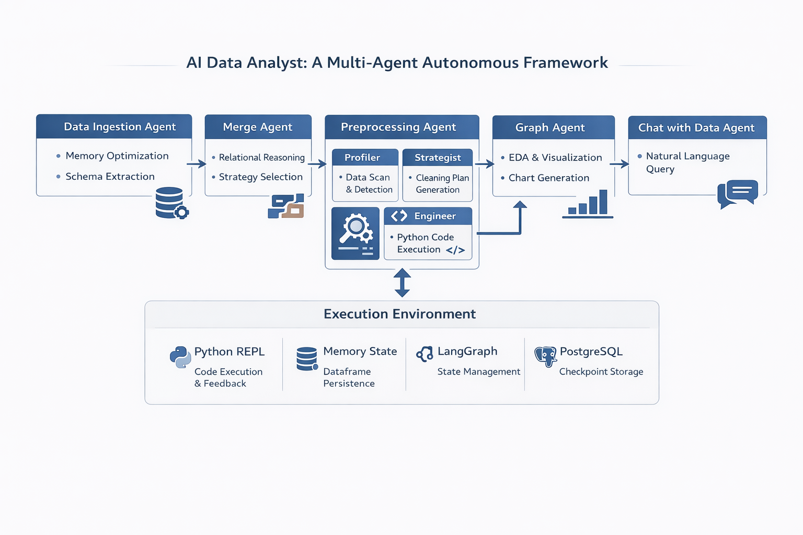

Abhishek Kapoor
Selected Projects
KKBox Music Streaming Churn Predictor (MLOps Platform)
Production-grade MLOps system for real-time churn prediction on large-scale music streaming data, focusing on automation, reproducibility, and monitoring.
- Designed distributed data pipelines using Dask, Pandas, Parquet, and MinIO.
- Implemented zero-skew training using unified Scikit-learn pipelines.
- Enabled full traceability with MLflow, DVC, and PostgreSQL.
- Deployed FastAPI inference service using Docker.
- Implemented monitoring with Prometheus, Grafana, and Evidently AI.

Tech: Python, LightGBM, Dask, MLflow, DVC, FastAPI, Docker, Prometheus, Grafana
AI Data Analyst: Multi-Agent Autonomous Framework
Autonomous multi-agent system that automates data ingestion, preprocessing, analysis, and visualization using LLMs.
- Built specialized agents for ingestion, merging, and cleaning.
- Implemented LLM-based preprocessing strategy generation.
- Enabled self-correcting execution using Python REPL.
- Integrated DuckDB for fast analytical queries.
- Maintained persistent workflows using LangGraph.

Tech: LangGraph, LangChain, Llama 3.3, Python, Pandas, DuckDB, PostgreSQL
MiniCLIP: End-to-End Vision-Language Model
Lightweight CLIP-style vision-language model built from scratch and optimized for low-resource deployment.
- Implemented dual-encoder Transformer architecture.
- Trained on Flickr30k with custom tokenizer.
- Applied ONNX quantization for optimization.
- Reduced model size by ~73%.
- Built interactive inference demo.

Tech: PyTorch, Transformers, ONNX, Tokenizers, ONNX Runtime